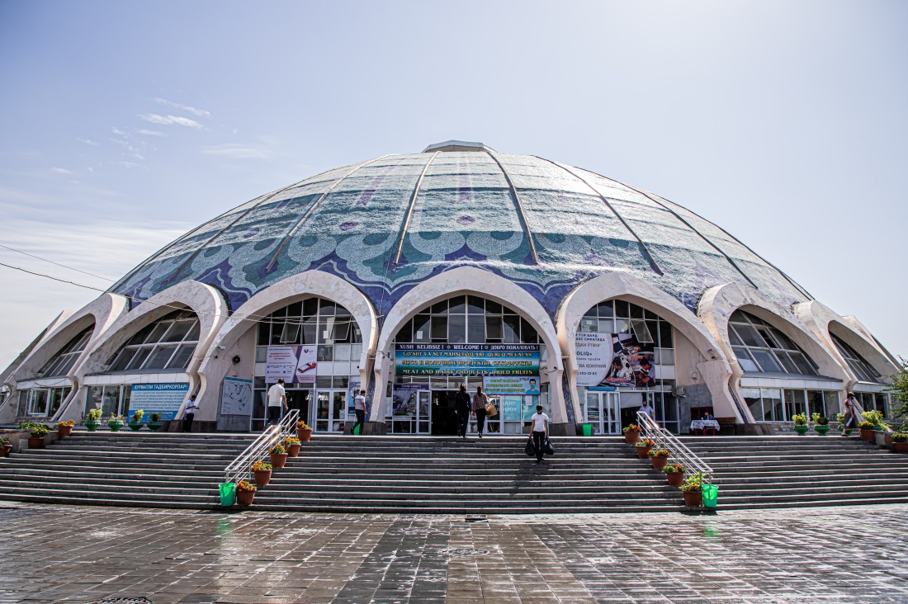
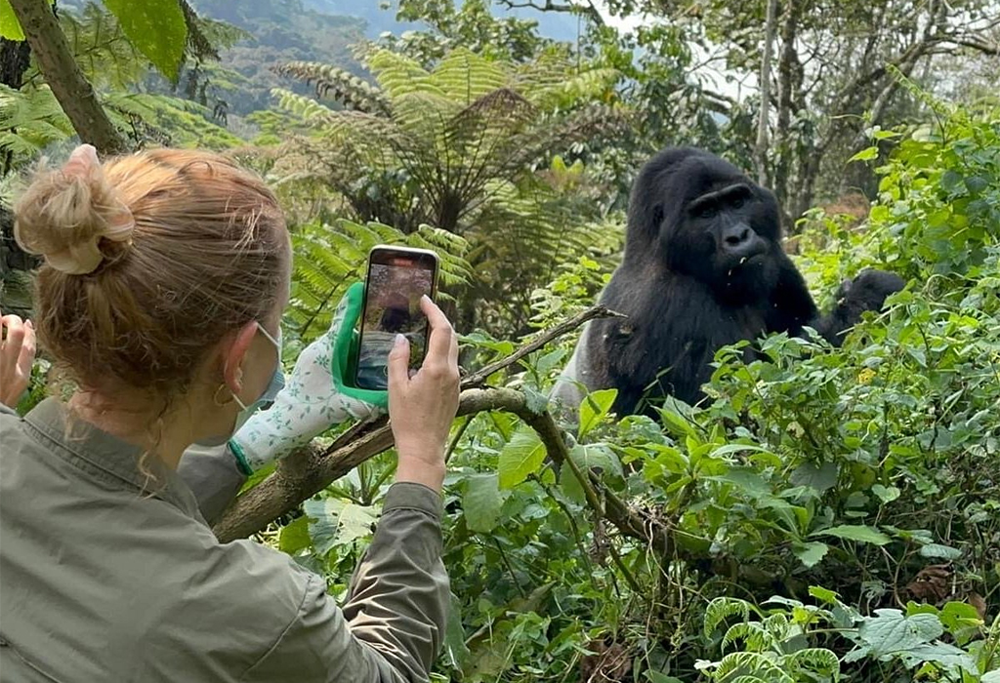

Tourism has transformed dramatically over the past two decades, and 2025 marks a pivotal moment with AI, sustainability, and immersive tech shaping the journey. With Tourist Guide AI, explore how travel has evolved, what it looks like now, and what’s coming next. Ready for the future? Check our Solo Travel Guide and Cheap Travel Guide for more inspiration!
Over the last 20 years, tourism has shifted from guidebooks to AI-powered adventures. The rise of Online Travel Agencies like Expedia (2000s) and Airbnb (2008) made booking accessible, while low-cost airlines like Ryanair democratized global travel. Smartphones, starting with the iPhone in 2007, replaced paper maps with apps like Google Maps and TripAdvisor, empowering travelers with reviews and real-time navigation. Social media, especially Instagram (2010), turned destinations like Santorini into viral hotspots. Solo travel surged among Millennials, seeking freedom and local experiences like Thai cooking classes. Meanwhile, sustainability grew, with eco-conscious travelers flocking to Costa Rica and protests against overtourism in Venice sparking responsible travel trends.
In 2025, tourism blends technology, sustainability, and personalization. Apps like Tourist Guide AI create tailored routes, like a 2-hour Hanoi market walk, and answer queries like “Find a $2 pho spot.” Digital nomads thrive in coworking hubs in Chiang Mai, while bleisure travelers extend work trips in Lisbon. Sustainability is standard, with eco-friendly stays and carbon-neutral flights gaining traction in Iceland. AR enhances museum visits (e.g., virtual Louvre tours), and #TravelTok on X drives 82% of Gen Z trip planning (Skift, 2025). Tourist Guide AI’s real-time Q&A and offline maps keep travelers connected and informed, no matter where they roam.
The next decade promises revolutionary changes. Advanced AI, like Tourist Guide AI, will predict preferences, crafting itineraries based on your X posts or past trips. Autonomous shuttles and electric planes will simplify eco-friendly travel, while smart cities like Singapore use AI to manage crowds at attractions. Space tourism, led by SpaceX, will offer orbital trips by 2030, with lunar hotels on the horizon. VR tourism will let you “visit” Antarctica without environmental impact, and AR-guided hikes in Machu Picchu will blend physical and virtual adventures. Blockchain will secure bookings, ensuring scam-free travel.
As travelers seek fresh experiences, these destinations are set to shine by 2030:
Uzbekistan’s Silk Road revival makes Tashkent a budget-friendly gem, with $10 hostels and vibrant bazaars. A 2-hour AI-guided walk through Chorsu Bazaar offers affordable crafts and plov for $2. Use Tourist Guide AI to navigate historic madrasas and plan day trips to Samarkand.
Rwanda’s eco-tourism boom draws travelers to Kigali for gorilla trekking and sustainable stays ($15/night). A 1-hour AI-guided route through Nyamirambo explores colorful markets and local cafés. Tourist Guide AI suggests budget-friendly volcano hikes and cultural tours.
Porto offers Lisbon’s charm at lower costs, with $3 port wine tastings and free riverside walks. A 1.5-hour AI-guided route along the Douro River hits historic Ribeira and budget eats. Use Tourist Guide AI to find affordable hostels and avoid tourist crowds.
Stay ahead with these tools, alongside Tourist Guide AI, for next-gen travel:
Tourist Guide AI creates sustainable routes, like a low-impact Kigali tour, and answers queries like “Find a cheap café in Porto.” Its offline mode saves data costs in remote areas. Download now to stay ahead of travel trends.
Google Translate helps navigate menus in Tashkent or chat with locals in Kigali. Download language packs for offline use, pairing perfectly with Tourist Guide AI’s Q&A for seamless communication.
By 2030, AR glasses will project historical facts over sites like Porto’s Ribeira, enhancing Tourist Guide AI’s routes. Expect lightweight models from brands like Apple for immersive travel.
Blockchain platforms will ensure scam-free bookings for hostels or space tours by 2030. Use them with Tourist Guide AI to budget for trips to emerging spots like Rwanda.
X’s #FutureTravel hashtag will reveal emerging destinations like Tashkent and eco-tips for 2030. Follow travel accounts and use Tourist Guide AI to verify suggestions for your next trip.
Pack smart for the tech-driven, sustainable trips of tomorrow:
Smart luggage with GPS, like Samsonite’s Evoa, ensures your bag stays safe in Tashkent’s markets or Kigali’s streets. Pair with Tourist Guide AI for real-time navigation to avoid crowded areas.
A foldable solar charger keeps your phone and Tourist Guide AI running in remote areas like Rwanda’s volcanoes. Lightweight models charge during hikes, supporting eco-conscious travel.
A collapsible water bottle saves money in Porto’s touristy spots and reduces plastic waste. Refill at free stations, as suggested by Tourist Guide AI, for sustainable travel.
A 10,000mAh charger ensures Tourist Guide AI and future AR apps stay active in Kigali or Tashkent. Choose compact models for easy packing and charge nightly.
Pack three shirts, one jacket, and convertible pants for Porto’s riverside or Rwanda’s trails, keeping your bag under 7kg. Use Tourist Guide AI to find laundromats in emerging destinations.
Tourist Guide AI is at the forefront of tomorrow’s travel, adapting to trends like sustainability and AR. Ask, “What’s a low-impact route in Kigali?” or “Find a budget café in Tashkent.” Here’s how it leads: